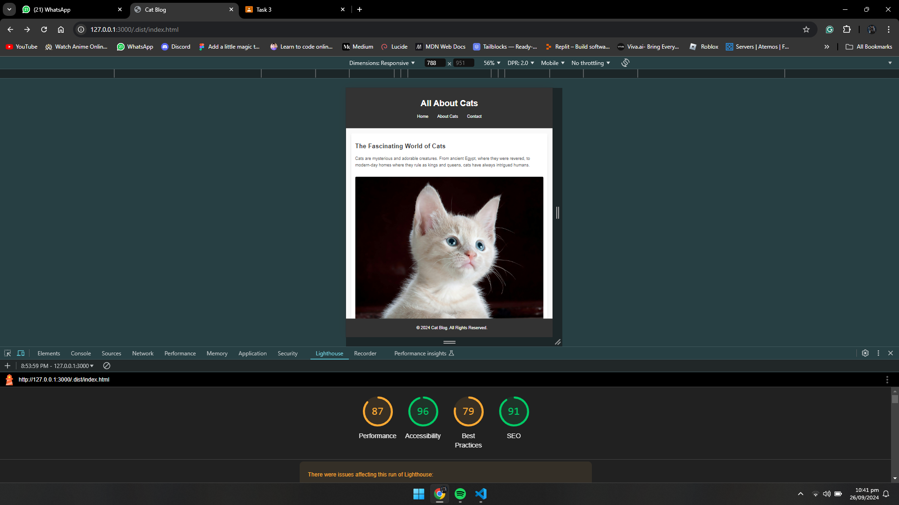
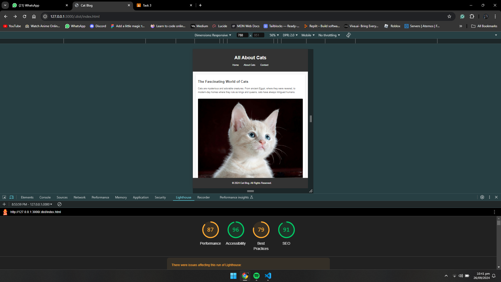

The Fascinating World of Cats
Cats are mysterious and adorable creatures. From ancient Egypt, where they were revered, to modern-day homes where they rule as kings and queens, cats have always intrigued humans.
Cats are mysterious and adorable creatures. From ancient Egypt, where they were revered, to modern-day homes where they rule as kings and queens, cats have always intrigued humans.
Cats are low maintenance and independent, yet they can be incredibly affectionate. If you're looking for a pet that's easy to care for but still offers companionship, cats are the way to go.